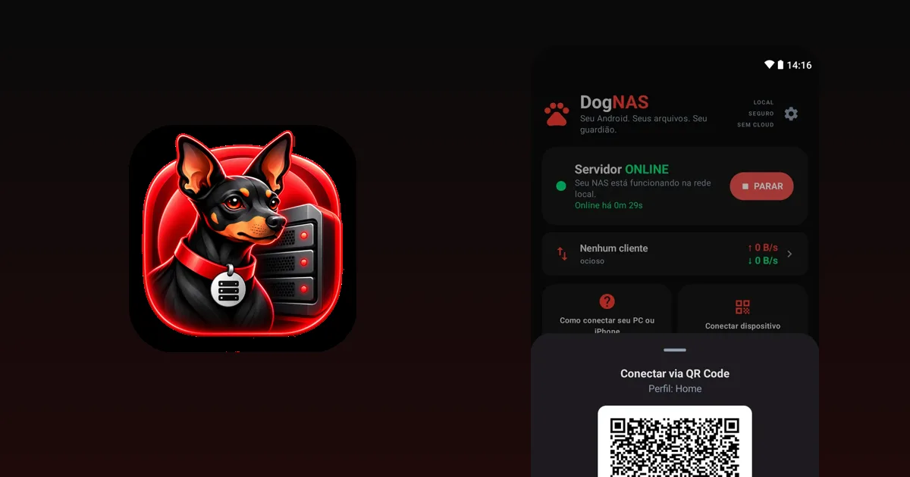

O que é SFTP e como acessar um servidor de arquivos no Android

Se você já viu "SFTP" em algum lugar e passou direto, este guia é para você. A sigla assusta, mas a ideia é simples: um jeito seguro de enviar e buscar arquivos em outro computador pela rede. É o que o DogNAS usa para entregar os arquivos do seu servidor aos outros aparelhos da casa.
O que é SFTP
SFTP significa SSH File Transfer Protocol: transferência de arquivos sobre o SSH. O SSH é o protocolo que cria uma conexão cifrada entre dois aparelhos. O SFTP usa essa conexão para listar pastas, enviar, baixar, renomear e apagar arquivos.
Na prática, isso quer dizer que o que passa pela rede não pode ser lido por outros aparelhos que estejam no mesmo Wi-Fi.
SFTP, FTP e SMB: qual a diferença?
- FTP é antigo e, por padrão, envia tudo sem cifra, inclusive a senha. Não é a melhor escolha em rede nenhuma.
- SFTP parece o FTP para quem usa, mas roda sobre o SSH e é cifrado. Não tem relação técnica com o FTP, apesar do nome parecido.
- SMB é o compartilhamento de pastas do Windows. É prático em rede local, mas costuma ser mais chato de configurar fora do Windows.
Para que serve em casa
- guardar e acessar fotos, vídeos e documentos num servidor da casa;
- mandar arquivos do PC para o celular e de volta;
- receber arquivos de câmeras, NVRs e automações que enviam por SFTP;
- fazer cópias de arquivos de outros computadores por scripts e ferramentas como o rclone.
Como acessar um servidor Android com o DogNAS
O DogNAS transforma um celular ou tablet Android (7.0 ou mais recente) em um servidor SFTP na sua rede Wi-Fi. Cada aparelho recebe uma credencial própria, que você pode revogar a qualquer momento, e a chave do servidor é fixada no pareamento, para você saber que está falando com o servidor certo.
- Instale e inicie o servidor no Android que vai guardar os arquivos.
- No celular, use o DogNAS Client Lite: aponte a câmera para o QR Code do perfil e digite o PIN.
- No computador, abra um cliente SFTP, como FileZilla, WinSCP ou Cyberduck, e use os dados de conexão que o servidor mostra na tela "Como conectar seu PC ou iPhone".
- Navegue, arraste e solte arquivos. Para automações, ferramentas como rclone e o
sftpdo OpenSSH também funcionam.


O que o SFTP não faz
- Não é um backup. Ele só transporta os arquivos. Mantenha uma cópia independente do que é importante.
- Só funciona se a rede deixar. O servidor e o seu aparelho precisam estar na mesma rede, e o servidor precisa estar ligado.
- Cifrar o caminho não protege o servidor. Use PIN e senhas fortes, e revogue as credenciais de aparelhos que você não usa mais.
Em resumo
SFTP é um jeito seguro e universal de acessar arquivos pela rede, e quase todo programa de transferência o entende. Com o DogNAS, você tem um servidor SFTP no Android sem configurar nada no roteador. Para ver o passo a passo completo, leia como transformar um Android antigo em servidor de arquivos.